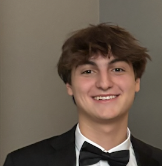

Jude Ornstein
Role: Research, website development, visual design, and presentation organization.
Meet the students behind NexLock One Touch and learn how our project came together.
We are students at Golda Och Academy. NexLock One Touch was developed as part of our engineering and design process, combining research, problem-solving, product design, and reflection.

Role: Research, website development, visual design, and presentation organization.
Role: Product design, engineering ideas, research support, and testing/reflection work.
We would like to acknowledge the teachers, classmates, and research sources that helped shape this project. Their feedback, questions, and suggestions helped us improve both our design thinking and our final presentation.
We were also inspired by existing child-safety products, product design websites, and research on home safety risks involving children. These sources helped us better understand the problem and identify areas where current solutions could be improved.
Artificial intelligence was used as a support tool during this project. AI helped us brainstorm website layout ideas, improve wording, organize content, refine design choices, and troubleshoot parts of the HTML/CSS code.
AI was not used to replace our thinking or decision-making. Instead, it was used to assist with revision, formatting, and development while we remained responsible for the project’s research, design decisions, and final work.